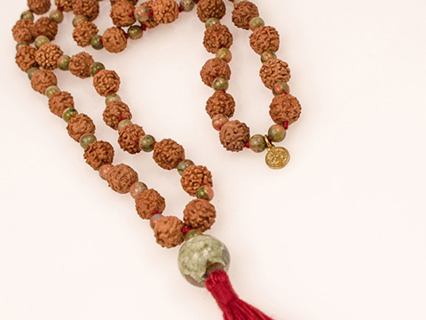

Jasper is considered the supreme nurturer. The stone is a protector from life's negativities. A balance mala would benefit anyone who is in a transition period in their life or feeling like they should align their chakras.
Here is Jasper content pulled form the latest Etsy listing:
{{etsyDescription}}